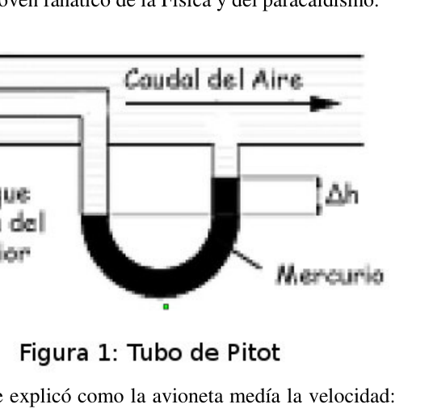
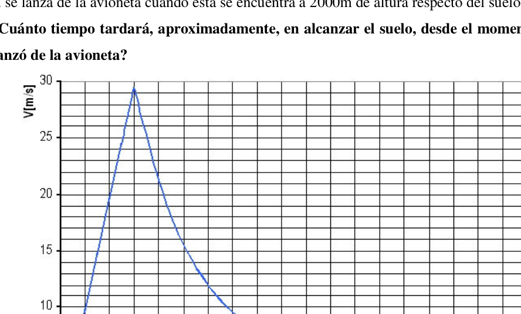

Ciencia del deporte extremo
PT137. Ciudad de Buenos Aires. Verde.
La ciencia del deporte extremo.
Un joven propietario de una estancia, Carlitos, se prepara para disfrutar de un día al aire libre a bordo
de su avioneta. Se encuentra acompañado por Piru, un joven fanático de la Física y del paracaidismo.
Mientras
se
encontraban
volando,
Carlitos, conocedor del gran conocimiento
científico de su colega, lo indaga respecto
a la medición de velocidad efectuada por
el velocímetro de la avioneta. Este le
comentó que la medición registrada por el
velocímetro era en realidad la velocidad
relativa de la avioneta respecto del aire, y
en días ventosos como ese, dicha
velocidad podría ser considerablemente
distinta a la real. Al ver la sorpresa del buen Charly, le explicó como la avioneta medía la velocidad:
El dispositivo utilizado consta de un tubo Pitot , el cual opera según las bases de la dinámica de
fluidos y es un ejemplo clásico para la aplicación práctica de las ecuaciones de Bernoulli. Un tubo
Pitot es un tubo abierto en la parte delantera que se dispone contra una corriente de aire que ingresa del
exterior de forma que su eje central se encuentre en paralelo con respecto a la dirección de la avance
de la avioneta, para que la corriente choque de forma frontal en el orificio del tubo. La parte trasera se
fija a un manómetro.
Mientras que la parte la presión del aire que ingresa en el primer orificio del tubo (el de la izquierda
del gráfico) es la total, en la del manómetro de atrás sólo se ve reflejada la presión hidrostática. Esta
diferencia de presiones es la que produce un desnivel en el líquido (en este caso, mercurio) que se
coloca entre ambos, y midiendo dicha diferencia de altura (para esto se utilizan sensores) se puede
obtener el valor de la velocidad de la avioneta respecto del aire exterior.
a) Demuestre que la velocidad de la avioneta respecto del aire exterior, en función de los datos
dados por el tubo Pitot, se calcula como:
aire
aire
hg
h
g
v
ρ
ρ
ρ
∆
−
). .( .2
donde ∆h representa el desnivel de altura registrado en el mercurio, aire ρ la densidad del aire, y hg ρ la densidad del mercurio. Para un cierto momento, el desnivel de altura (∆h) registrado es de 2cm. Siendo 13.6 kg/dm3 la densidad del mercurio y 1.29 kg/m3 la del aire. b) Calcular el valor de la velocidad de la avioneta (respecto del aire exterior) en dicho instante.
- 114 -
Como se ha dicho anteriormente, el gran problema de este sistema de medición, es que el valor
arrojado por el velocímetro dista mucho de la velocidad de la avioneta respecto de la Tierra en días
ventosos.
En la mañana en la que salen a volar, la velocidad del viento respecto de la Tierra es de 10m/s en
dirección Noreste NE (formando 30º con la dirección Norte), mientras que el velocímetro del avioneta
indica una velocidad de 108km/h, con la trompa del avión apuntando en dirección Noroeste NO (esto
se puede saber gracias a la utilización de una brújula). El avión está realizando un desplazamiento
“real” respecto de la Tierra en dirección Norte N (esto le es informado por alguien que se encuentra en
el suelo).
c) ¿Cuál es la velocidad respecto de la Tierra del avión?
Volvamos a nuestro amigo físico y paracaidista, Piru.
La razón por la cual estas personas tan audaces pueden lanzarse desde semejantes alturas sin hacerse
daño al caer, es gracias a la acción de la fuerza viscosa, el rozamiento que se produce cuando un objeto
se mueve en un fluido. Dicha fuerza es proporcional al cuadrado de la velocidad del objeto y su valor
(módulo) se calcula como
2
.v
Fv
γ
=
, y además tiene misma dirección pero sentido opuesto a la
velocidad con la que se mueve el objeto. El escalarγ es el coeficiente de viscosidad, y se calcula
como:
2 . . δ ρ γ A =
donde ρ es la densidad del aire, A el área frontal a la dirección de avance y δ un coeficiente que
depende de la forma.
Cuando la persona se lanza con el paracaídas cerrado, consideraremos despreciable el efecto de la
fuerza viscosa ya que lo hace durante un intervalo de tiempo muy chico y el coeficiente γ es muy
pequeño. Sin embargo, esta cobra gran importancia al abrir el paracaídas.
En este caso, el peso del paracaidista es
kg
90
(el empuje que el aire realiza sobre él se desprecia), y
el paracaídas que utiliza tiene forma circular y un diámetro de 7 metros. La densidad del aire, si bien
sabemos que varía dependiendo de la altitud, consideraremos que tiene un valor constante
(nuevamente de 1.29 kg/m3) debido a que no varía apreciablemente en las alturas en las que estamos
analizando la situación.
En la figura 2 se muestra un gráfico de cómo evolucionó la velocidad del paracaidista en función del
tiempo, desde el momento en el que se lanza (Nota: que el gráfico llegue hasta los 20 segundos, no
quiere decir que el movimiento del paracaidista finalice en ese momento).
Basándose en los datos antes expuestos y en los que Ud. pueda extraer visualmente del gráfico
brindado, calcule:
c) ¿Qué distancia en la dirección vertical recorrió Piru hasta abrir el paracaídas?
d) ¿Cuál es el valor del coeficiente de forma δ ?
- 115 - e) ¿Cuánto vale aproximadamente la aceleración media que sufre el paracaidista desde que abre el paracaídas hasta que prácticamente “alcanza” su velocidad límite? Importante: recordemos que en realidad, la velocidad límite, como su nombre lo indica, es un valor que jamás será alcanzado por el móvil, pero al cual puede acercarse infinitamente. Por eso la palabra “alcanza” aparece entre comillas. Piru se lanza de la avioneta cuando esta se encuentra a 2000m de altura respecto del suelo. f) ¿Cuánto tiempo tardará, aproximadamente, en alcanzar el suelo, desde el momento en el que se lanzó de la avioneta?


Topic: Fluid Mechanics, Newtonian Mechanics Metodi: Bernoulli’s Equation, Free-Body Diagram, Vector Decomposition Competenze: Physical Reasoning, Mathematical Modeling Objects: Manometer, Projectile Fonte: Testo (PDF) — p.3
Scienza dello sport estremo
PT137. Città di Buenos Aires. Verde. La scienza dello sport estremo. Un giovane proprietario di un soggiorno, Carlitos, si prepara a godere di una giornata all’aria aperta a bordo.
- Il suo aereo. È accompagnato da Piru, un giovane fanatico della Fisica e del paracadutismo. Mentre se
- Lo trovavano. volando, Carlito, conoscitore della grande conoscenza Il suo collega, lo ha chiesto. alla misurazione della velocità effettuata da il velocimetro del velivolo. Questo le ha commentato che la misura registrata dal Il velocimetro era in realtà la velocità relativa dell’aeromobile rispetto all’aria; e In giorni così ventososi, felice. La velocità potrebbe essere considerevole. diversa dalla reale. Vedendo la sorpresa del buon Charly, gli spiegò come l’aereo misurava la velocità: Il dispositivo utilizzato è costituito da un tubo Pitot , che opera secondo le basi della dinamica di Il metodo di Bernoulli è un’eccezione di questo tipo. Un tubo . Pitot è un tubo aperto nella parte anteriore che si dispone contro un flusso d’aria che entra dal L’aereo è stato utilizzato per la costruzione di un’aereo di linea di linea. di un aereo, in modo che il corrente colpisca il tubo. La parte posteriore è
- Staccate un manometro. Mentre parte la pressione dell’aria che entra nel primo foro del tubo (il di sinistra Il calcolo del grafico) è il totale, nel manometro posteriore si riflette solo la pressione idrostatica. Questa è la mia . La differenza di pressione è quella che produce un svantaggio nel liquido (in questo caso, mercurio) che si Si colloca tra i due, e misurando tale differenza di altezza (per questo vengono utilizzati sensori) si può ottenere il valore della velocità dell’aeromobile rispetto all’aria esterna. a) Dimostra che la velocità dell’aeromobile rispetto all’aria esterna, in base ai dati dati dal tubo Pitot, si calcolano come: aria aria hg h g v ρ ρ ρ ∆ − = ). .( .2
dove ∆h rappresenta l’incremento di altezza registrato nel mercurio, aria ρ la densità dell’aria, e hg ρ la densità del mercurio. Per un certo momento, il livello di altezza (∆h) registrato è di 2 cm. La capacità di produzione è di 13,6 kg/dm3 densità del mercurio e 1,29 kg/m3 di quella dell’aria. b) Calcolare il valore della velocità dell’aeromobile (rispetto all’aria esterna) in tale istante.
- 114 - Come detto prima, il grande problema di questo sistema di misura è che il valore di E’ molto lontano dalla velocità del velivolo rispetto alla Terra in pochi giorni.
- Ventoli. La mattina in cui si esce per volare, la velocità del vento rispetto alla Terra è di 10m/s in direzione nord-est NE (formando 30o con direzione nord), mentre il velocimetro del velivolo indica una velocità di 108km/h, con il tubo dell’aeromobile puntando verso nord-ovest NO (questo (Il numero di persone che si trovano in una compassa è indicato). L’ aereo sta effettuando un spostamento. real rispetto alla Terra in direzione Nord N (questo viene informato da qualcuno che si trova in il suolo). c) Qual è la velocità rispetto alla Terra dell’aereo? Tornamo al nostro amico fisico e paracadutista, Piru. La ragione per cui queste persone così audaci possono lanciare da queste altezze senza essere fatti. Il danno causato dalla caduta è dovuto all’azione della forza viscosa, il ruggine che si verifica quando un oggetto si muove in un fluido. Questa forza è proporzionale al quadrato della velocità dell’oggetto e del suo valore. (module) si calcola come 2 .v Fv γ = , e inoltre ha la stessa direzione ma senso opposto alla velocità con cui l’oggetto si muove. La scalaγ è il coefficiente di viscosità, e viene calcolato come: 2 . . δ ρ γ A =
dove ρ è la densità dell’aria, A l’area frontale alla direzione di avanzamento e δ un coefficiente che Dipende dalla forma. Quando la persona lancia con il paracadute chiuso, considereremo disprezzo l’effetto della forza viscosa poiché lo fa durante un intervallo di tempo molto piccolo e il coefficiente γ è molto piccolo. Tuttavia, questo acquista grande importanza aprendo il paracadute. In questo caso, il peso del paracadutista è kg 90 (la spinta che l’aria fa su di lui è disprezzata), e il paracaduto che utilizza è circolare e ha un diametro di 7 metri. La densità dell’aria, però. Sappiamo che varia a seconda dell’altitudine, considereremo che ha un valore costante. (Ancora 1,29 kg/m3) perché non varia notevolmente nelle altezze in cui siamo analizzando la situazione. La figura 2 mostra un grafico di come la velocità del paracadutista si è evoluta in funzione del tempo, dal momento in cui viene lanciato (Nota: che il grafico raggiunga i 20 secondi, non significa che il movimento del paracadutista finisce in quel momento). Sulla base dei dati esposti in precedenza e su cui lei ha Potete estrarre visivamente dal grafico. tossato, calcola: c) Quante distanze in direzione verticale ha percorso Piru fino a aprire il paracadute? d) Qual è il valore del coefficiente di forma δ?
- 115 - e) Quanto vale approssimativamente l’accelerazione media che il paracadutista subisce dall’apertura? il paracadute fino a raggiungere praticamente la sua velocità limite? Importante: ricordiamoci che In realtà, la velocità limite, come il nome indica, è un valore che non sarà mai raggiunto dal mobile, ma che può essere raggiunto infinitamente. Ecco perché la parola alcanza appare tra le citazioni. Piru lancia il velivolo quando si trova a 2000 metri di altezza rispetto al suolo. f) Quanto tempo ci vorrà circa per raggiungere il suolo, dal momento in cui
- E’ saltato dall’aereo?
Topic: Fluid Mechanics, Newtonian Mechanics Metodi: Bernoulli’s Equation, Free-Body Diagram, Vector Decomposition Competenze: Physical Reasoning, Mathematical Modeling Objects: Manometer, Projectile Fonte: Testo (PDF) — p.3
The following is a list of the countries of the European Union.
PT137. City of Buenos Aires. Green, please. The science of extreme sports. A young guest house owner, Carlitos, prepares to enjoy a day out on board. From his little plane. He is accompanied by Piru, a young fan of Physics and parachuting. While se They found it . Flying, Carlitos, the knower of great knowledge. The scientific community is a colleague of yours, and he’s asking you about it. The speed measurement performed by the speedometer of the jet. This one ‘s for you . He noted that the measurement recorded by the The speedometer was actually the speed. relative to the aircraft relative to the air; and On windy days like that, blessed Speed could be considerably different from the real thing. Seeing the surprise of good Charly, he explained how the little plane measured speed: The device used consists of a Pitot tube , which operates according to the basics of the dynamics of The first is the fluidity of the fluid and is a classic example of the practical application of Bernoulli’s equations. A pipe . Pitot is an open tube in the front that is set against an air stream entering the The vehicle is designed to be equipped with a single external axle so that its centre axis is parallel to the direction of forward movement. the airplane, so that the current is forced to strike the pipe hole in the front. The back is . I’ll fix it on a manometer. While the parting air pressure entering the first hole of the tube (the one on the left The total is the total, the hydrostatic pressure is only reflected in the rear manometer. This one . The difference in pressure is the one that causes a fluid (in this case mercury) to be unstable. The height difference is measured by using sensors. obtain the value of the aircraft’s speed relative to the outer air. (a) Demonstrate that the aircraft’s speed relative to the outer air, based on the data given by the Pitot tube, it is calculated as: Air Air hg h g v ρ ρ ρ ∆ −
). .( .2
where ∆h represents the height difference recorded in mercury, Air ρ the density of the air, and hg ρ the density of mercury. For a certain time, the recorded height difference (∆h) is 2cm. The average weight of the product is 13.6 kg/dm3 the density of mercury and air density of 1,29 kg/m3. (b) Calculate the value of the speed of the aeroplane (with respect to the outer air) at that moment.
- 114 - As mentioned above, the big problem with this measurement system is that the value Thrown by the speedometer is far from the plane’s speed relative to Earth in days. windy. On the morning they go out to fly, the wind speed with respect to Earth is 10m/s in North-East NE direction (forming 30° with North direction), while the speedometer of the aircraft indicates a speed of 108km/h, with the aircraft’s torso pointing towards the NORTH-WEST direction (this The first is that the data is not available. The plane is making a displacement . real with respect to Earth in the direction North N (this is reported to you by someone who is in the ground). (c) What is the plane’s speed relative to Earth? Let’s get back to our physical and paratrooper friend, Piru. The reason why these bold people can jump from such heights without being made. The damage caused by falling is due to the action of viscous force, the friction that occurs when an object It moves in a fluid. This force is proportional to the square of the object ‘s velocity and its value . (module) is calculated as 2 .v Fv γ = , and also has the same direction but opposite sense to the speed at which the object moves. The scalarγ is the viscosity coefficient, and is calculated as follows: 2 . . δ ρ γ A =
where ρ is the air density, A the front area to the forward direction and δ a coefficient that It depends on the form. When the person launches with the parachute closed, we will consider the effect of the viscous force as it does so over a very small time interval and the coefficient γ is very It’s small. However, this takes on great importance when opening the parachute. In this case, the paratrooper’s weight is kg 90 (the air’s push on it is despised), and The parachute you use is circular in shape and 7 meters in diameter. The density of the air, though We know that it varies depending on altitude, we’ll consider it to be a constant value. (again 1.29 kg/m3) because it does not vary appreciably at the heights at which we are I’m looking at the situation. Figure 2 shows a graph of how the speed of the parachutist evolved based on the time, from the moment it is released (Note: the graph should be up to 20 seconds, not It means the paratrooper’s movement ends at that moment). Based on the data presented above and on which you I can visually extract from the graph. Toasted, calculate: (c) What distance in the vertical direction did Piru travel to open the parachute? (d) What is the value of the coefficient in form δ?
- 115 - (e) What is the average acceleration of the parachute since opening? The parachute until it practically reaches its speed limit? Important: remember that In fact, the speed limit, as the name implies, is a value that will never be reached by the mobile, but one that can be approached infinitely. That’s why the word “reach” appears between quotes. Piru is launched from the aircraft when it is 2000m above the ground. (f) How long will it take to reach the ground from the moment when the He jumped out of the plane?
Topic: Fluid Mechanics, Newtonian Mechanics Metodi: Bernoulli’s Equation, Free-Body Diagram, Vector Decomposition Competenze: Physical Reasoning, Mathematical Modeling Objects: Manometer, Projectile Fonte: Testo (PDF) — p.3